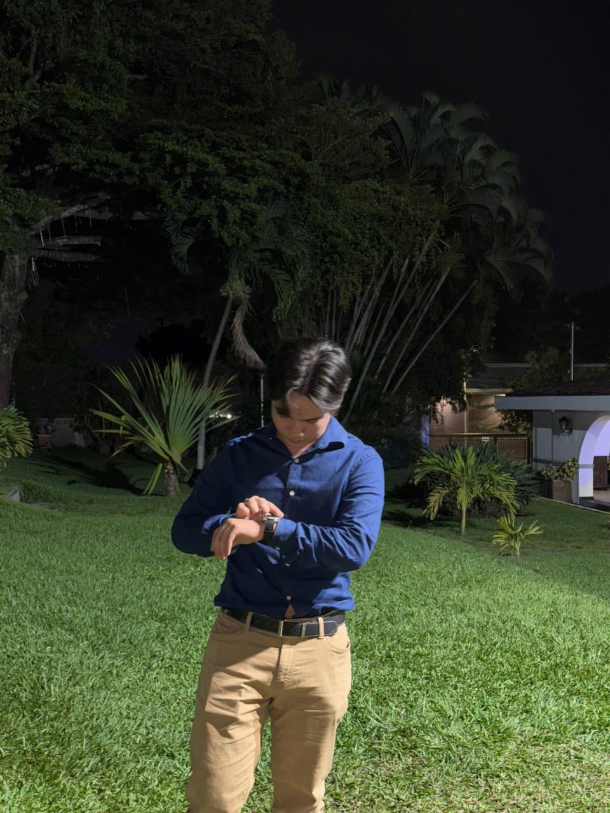

¡Bienvenido a mi página personal!

Esta página ha sido creada como parte del ejercicio complementario de la Guía 2 de Desarrollo Web I. Aquí encontrarás información sobre mi vida, intereses y aspiraciones profesionales.
Estoy aprendiendo desarrollo web y esta práctica me permite aplicar los conocimientos sobre selectores CSS avanzados y modelo de caja que he adquirido recientemente.